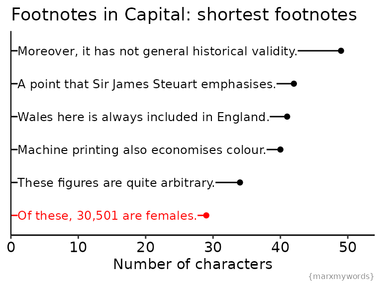

Footnotes
capital_footnotes.RmdCapital shouldn’t be thought of as an isolated work of political economy, but as part of an ongoing discourse as to the mechanics of capital and the solution to a society based around capital’s impersonal domination. It can be easy to lose sight of that, reading Capital on its own 150 years later, without knowing the context of the discussions at the time. Marx can get a little snarky about the works of earlier political economists, and often uses the footnotes to sarcastically and humourously point out the flaws in his peers’ arguments. It’s fun to think of these conversations happening not in weighty tomes but over a platform like twitter.
Here, I explore the footnotes of Capital: Which footnote is the longest (and how many tweets would that thread be?)? Which footnote is the shortest? What proportion of footnotes would fit in a tweet? Who would Marx tag in his tweets?
Methods
{marxmywords} provides the text for Capital as a data frame. For more on the structure and source of this text, see help(capital_vol1). For now, we are only interested in the footnotes, so we will filter for those rows (each row corresponds to one footnote). We will also do a little bit of tidying up of the text: remove leading and trailing white space and the number associated with the footnote. Finally, we will count the number of characters in each footnote.
tidy_footnotes <- capital_vol1 %>%
filter(section == "footnotes") %>%
# remove leading white space
mutate(text = gsub("^ *", "", text)) %>%
# extract footnote number
mutate(
ref = as.numeric(gsub("(*)\\. .*", "\\1", text)),
text = gsub("^[0-9]+\\. *", "", text)
) %>%
# remove trailing white space
mutate(text = gsub(" *$", "", text)) %>%
mutate(
chapter_names = pretty_chapter_names(chapter),
n_characters = nchar(text)
) %>%
# remove empty rows
filter(n_characters >= 1 & !is.na(ref))Analysis
The longest footnote in Capital
From the graph above, we can see the longest footnote is in Chapter 25, although there are a few close competitors!
If the reader reminds me of Malthus, whose “Essay on Population” appeared in 1798, I remind him that this work in its first form is nothing more than a schoolboyish, superficial plagiary of De Foe, Sir James Steuart, Townsend, Franklin, Wallace, &c., and does not contain a single sentence thought out by himself. The great sensation this pamphlet caused, was due solely to party interest. The French Revolution had found passionate defenders in the United Kingdom; the “principle of population,” slowly worked out in the eighteenth century, and then, in the midst of a great social crisis, proclaimed with drums and trumpets as the infallible antidote to the teachings of Condorcet, &c., was greeted with jubilance by the English oligarchy as the great destroyer of all hankerings after human development. Malthus, hugely astonished at his success, gave himself to stuffing into his book materials superficially compiled, and adding to it new matter, not discovered but annexed by him. Note further: Although Malthus was a parson of the English State Church, he had taken the monastic vow of celibacy — one of the conditions of holding a Fellowship in Protestant Cambridge University: “Socios collegiorum maritos esse non permittimus, sed statim postquam quis uxorem duxerit socius collegii desinat esse.” (“Reports of Cambridge University Commission,” p. 172.) This circumstance favourably distinguishes Malthus from the other Protestant parsons, who have shuffled off the command enjoining celibacy of the priesthood and have taken, “Be fruitful and multiply,” as their special Biblical mission in such a degree that they generally contribute to the increase of population to a really unbecoming extent, whilst they preach at the same time to the labourers the “principle of population.” It is characteristic that the economic fall of man, the Adam’s apple, the urgent appetite, “the checks which tend to blunt the shafts of Cupid,” as Parson Townsend waggishly puts it, that this delicate question was and is monopolised by the Reverends of Protestant Theology, or rather of the Protestant Church. With the exception of the Venetian monk, Ortes, an original and clever writer, most of the population theory teachers are Protestant parsons. For instance, Bruckner, “Théorie du Système animal,” Leyde, 1767, in which the whole subject of the modern population theory is exhausted, and to which the passing quarrel between Quesnay and his pupil, the elder Mirabeau, furnished ideas on the same topic; then Parson Wallace, Parson Townsend, Parson Malthus and his pupil, the arch-Parson Thomas Chalmers, to say nothing of lesser reverend scribblers in this line. Originally, Political Economy was studied by philosophers like Hobbes, Locke, Hume; by businessmen and statesmen, like Thomas More, Temple, Sully, De Witt, North, Law, Vanderlint, Cantillon, Franklin; and especially, and with the greatest success, by medical men like Petty, Barbon, Mandeville, Quesnay. Even in the middle of the eighteenth century, the Rev. Mr. Tucker, a notable economist of his time, excused himself for meddling with the things of Mammon. Later on, and in truth with this very “Principle of population,” struck the hour of the Protestant parsons. Petty, who regarded the population as the basis of wealth, and was, like Adam Smith, an outspoken foe to parsons, says, as if he had a presentiment of their bungling interference, “that Religion best flourishes when the Priests are most mortified, as was before said of the Law, which best flourisheth when lawyers have least to do.” He advises the Protestant priests, therefore, if they, once for all, will not follow the Apostle Paul and “mortify” themselves by celibacy, “not to breed more Churchmen than the Benefices, as they now stand shared out, will receive, that is to say, if there be places for about twelve thousand in England and Wales, it will not be safe to breed up 24,000 ministers, for then the twelve thousand which are unprovided for, will seek ways how to get themselves a livelihood, which they cannot do more easily than by persuading the people that the twelve thousand incumbents do poison or starve their souls, and misguide them in their way to Heaven.” (Petty: “A Treatise of Taxes and Contributions,” London, 1667, p. 57.) Adam Smith’s position with the Protestant priesthood of his time is shown by the following. In “A Letter to A. Smith, L.L.D. On the Life, Death, and Philosophy of his Friend, David Hume. By one of the People called Christians,” 4th Edition, Oxford, 1784, Dr. Horne, Bishop of Norwich, reproves Adam Smith, because in a published letter to Mr. Strahan, he “embalmed his friend David” (sc. Hume); because he told the world how “Hume amused himself on his deathbed with Lucian and Whist,” and because he even had the impudence to write of Hume: “I have always considered him, both in his life-time and since his death, as approaching as nearly to the idea of a perfectly wise and virtuous man, as, perhaps, the nature of human frailty will permit.” The bishop cries out, in a passion: “Is it right in you, Sir, to hold up to our view as ‘perfectly wise and virtuous,’ the character and conduct of one, who seems to have been possessed with an incurable antipathy to all that is called Religion; and who strained every nerve to explode, suppress and extirpate the spirit of it among men, that its very name, if he could effect it, might no more be had in remembrance?” (l. c., p. 8.) “But let not the lovers of truth be discouraged. Atheism cannot be of long continuance.” (P. 17.) Adam Smith, “had the atrocious wickedness to propagate atheism through the land (viz., by his “Theory of Moral Sentiments”). Upon the whole, Doctor, your meaning is good; but I think you will not succeed this time. You would persuade us, by the example of David Hume, Esq., that atheism is the only cordial for low spirits, and the proper antidote against the fear of death…. You may smile over Babylon in ruins and congratulate the hardened Pharaoh on his overthrow in the Red Sea.” (l. c., pp. 21, 22.) One orthodox individual, amongst Adam Smith’s college friends, writes after his death: “Smith’s well-placed affection for Hume … hindered him from being a Christian…. When he met with honest men whom he liked … he would believe almost anything they said. Had he been a friend of the worthy ingenious Horrox he would have believed that the moon some times disappeared in a clear sky without the interposition of a cloud…. He approached to republicanism in his political principles.” (“The Bee.” By James Anderson, 18 Vols., Vol. 3, pp. 166, 165, Edinburgh, 1791-93.) Parson Thomas Chalmers has his suspicions as to Adam Smith having invented the category of “unproductive labourers,” solely for the Protestant parsons, in spite of their blessed work in the vineyard of the Lord.
So there you have it: Malthus provoked the longest diatribe.
The shortest footnotes
The shortest footnote is unfortunately a little harder to identify. Naively sorting for the fewest characters gets us a bunch of “l.c.” (“last cited”) plus a reference to Petty (the economist, though it would be funny if this was instead a commentary on the small mindedness of a statement).
tidy_footnotes %>%
arrange(n_characters) %>%
head()
#> section part chapter text ref chapter_names n_characters
#> 1 footnotes 3 10 l.c. 53 Chapter 10 4
#> 2 footnotes 3 10 l.c. 65 Chapter 10 4
#> 3 footnotes 3 10 l.c. 124 Chapter 10 4
#> 4 footnotes 3 10 l.c. 136 Chapter 10 4
#> 5 footnotes 3 10 l.c. 137 Chapter 10 4
#> 6 footnotes 2 6 Petty. 8 Chapter 6 6
Tweetable Footnotes
From our analysis above, we know that the shortest non-citation footnote is 29 characters long. Twitter allows tweets up to 280 characters. How many fall in between these limits?
Citation Content
Who would Marx tag in his tweets? Whose tweets would he be replying to? Adam Smith and Ricardo spring to mind, perhaps first and foremost; who else makes it into the top 10?
To answer this, I used spacyr, an R port of the python NLP package spacy, and extracted all words tagged as proper nouns. The writers below all had at least 20 mentions across both the main text and footnotes.
(Note that I didn’t distinguish between father and son James Mill and John Stuart Mill. Some footnotes were added by Engels and signed with his full name, and so would be counted in here, however others are signed F.E., and would not be included in this count.)
Most of these aren’t so surprising. Smith, Ricardo, the Mills, Malthus, and Senior all wrote political economy works that Marx was directly critiquing and/or building on. It also makes sense than Marx would cite his earlier works (mostly Zur Kritik der Politischen Oekonomie and Misère de la Philosophie), and those of his frequent co-author Engels.
A few heavily cited people stood out to me. Dr. Julian Hunter was commissioned to investigate public health issues affecting the working class, and his saddening findings are cited mainly in Chapter 25 (20/25 mentions). Politician Wakefield ranks in the top ten despite nearly all of his mentions (20/25) occurring in a single, relatively short chapter. This chapter (chapter 33) discusses primitive accumulation and colonialism, and Wakefield had a scheme of systematic colonization named after him. Dr Andrew Ure wrote on the manufacturing industry in England and is cited primarily in Chapter 15 (18/37).